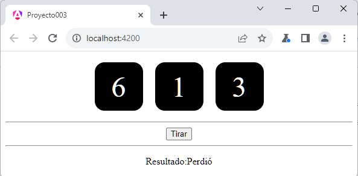

Vimos en el concepto anterior que una aplicación con Angular está conformada por componentes. Siempre hay una componente padre y esta puede tener una o más componentes hijas, a su vez las componentes hijas pueden tener componentes hijas de ellas y así sucesivamente.
En este concepto veremos una técnica para pasar datos de la componente padre a la componente hija.
Podemos pasar datos a una componente en el momento que definimos una etiqueta de la misma:
<app-dado valor="3"></app-dado>
Cuando declaramos la etiqueta app-dado definimos una propiedad llamada 'valor' y le pasamos el dato a dicha componente. Es idéntico a lo que hacemos a cuando definimos etiquetas HTML con sus propiedades.
Implementar una aplicación que muestre tres dados (crear una componente llamada 'dado') y un botón. Cuando se presione el botón generar tres valores aleatorios y pasarlos a las componentes respectivas para que se muestren. La clase principal debe mostrar un mensaje que el usuario ganó si los tres dados tienen el mismo valor.
Repetiremos los mismos pasos del concepto anterior para practicar la creación de una nueva componente y veremos lo nuevo de recibir datos en la componente creada.
Desde la línea de comandos de Node.js procedemos a crear el proyecto003:
c:\angulardevya> ng new proyecto003
Primero descendemos a la carpeta proyecto003 y nuevamente desde la línea de comandos procedemos a crear la componente 'dado' escribiendo:
c:\angulardevya\proyecto003> ng generate component dado
Recordemos que al ejecutar este comando se crean 4 archivos, todos relacionados a la componente que acabamos de crear.
Además dentro de la carpeta 'app' se crea una carpeta llamada 'dado' y dentro de ella se localizan los cuatro archivos creados.
En nuestro tercer paso vamos a implementar la vista de la componente 'dado' y su modelo. Abrimos el archivo 'dado.component.ts' y codificamos:
import { Component, Input } from '@angular/core';
@Component({
selector: 'app-dado',
imports: [],
templateUrl: './dado.component.html',
styleUrl: './dado.component.css'
})
export class DadoComponent {
@Input() valor: string = "";
}
En la clase DadoComponent podemos identificar la sintaxis para definir una propiedad que llega como parámetro de la componente padre:
@Input() valor: string="";
Asignamos un string vacío a la propiedad valor y luego se cargará un valor cuando creemos un objeto de esta clase.
Para definir el decorador @Input() debemos importar la clase Input:
import { Component, Input } from '@angular/core';
Codificamos ahora el archivo 'dado.component.html':
<div class="forma">
{{valor}}
</div>
Como podemos ver solo mostramos el valor almacenado en la propiedad 'valor' definido en el modelo (no hay cambios con el ejemplo anterior)
Para definir la hoja de estilo del 'dado' abrimos el archivo 'dado.component.css' y codificamos:
.forma {
width: 5rem;
height: 5rem;
font-size: 3rem;
color:white;
background-color: black;
border-radius: 1rem;
display: inline-flex;
justify-content: center;
align-items: center;
margin:10px;
}
Finamente nos falta definir tres objetos de nuestra clase 'DadoComponent' y pasar los valores que queremos que se muestren, si volvemos a ver el archivo 'dado.component.ts' podemos identificar en la llamada a @Component que tiene una propiedad llamada 'selector' con el valor 'app-dado':
@Component({
selector: 'app-dado',
imports: [],
templateUrl: './dado.component.html',
styleUrl: './dado.component.css'
})
Este es el selector que debemos utilizar para definir objetos de la clase DadoComponent en las vistas.
Abrimos ahora el archivo 'app.component.html' y remplazamos su contenido con la definición de tres dados y mediante interpolación pasamos el valor para cada dado:
<div style="text-align:center">
<app-dado valor="{{valor1}}"></app-dado>
<app-dado valor="{{valor2}}"></app-dado>
<app-dado valor="{{valor3}}"></app-dado>
<hr>
<button (click)="tirar()">Tirar</button>
<hr>
<p>Resultado:{{resultado}}</p>
</div>
<router-outlet />
Ahora codificamos la clase AppComponent donde generamos los tres valores aleatorios que mostrarán las componentes, implementamos además el método que captura el click del botón:
import { Component } from '@angular/core';
import { RouterOutlet } from '@angular/router';
import { DadoComponent } from './dado/dado.component';
@Component({
selector: 'app-root',
imports: [RouterOutlet, DadoComponent],
templateUrl: './app.component.html',
styleUrl: './app.component.css'
})
export class AppComponent {
valor1: number = this.retornarAleatorio()
valor2: number = this.retornarAleatorio()
valor3: number = this.retornarAleatorio()
resultado: string = "";
retornarAleatorio() {
return Math.floor(Math.random() * 6) + 1;
}
tirar() {
this.valor1 = this.retornarAleatorio();
this.valor2 = this.retornarAleatorio();
this.valor3 = this.retornarAleatorio();
if (this.valor1 == this.valor2 && this.valor1 == this.valor3)
this.resultado = 'Ganó';
else
this.resultado = 'Perdió';
}
}
Veamos las partes importantes de la componente 'AppComponent', primero importamos la clase 'DadoComponent':
import { DadoComponent } from './dado/dado.component';
Agregamos a la propiedad imports la referencia a la clase 'DadoComponent':
imports: [RouterOutlet, DadoComponent],
Definimos 4 atributos y los inicializamos a los tres primeros con valores aleatorios y al cuarto con un string vacío:
valor1: number = this.retornarAleatorio() valor2: number = this.retornarAleatorio() valor3: number = this.retornarAleatorio() resultado: string="";
El método tirar, vuelve a generar 3 valores aleatorios para cada dado y según sus valores fija el valor del atributo 'resultado':
tirar() {
this.valor1 = this.retornarAleatorio();
this.valor2 = this.retornarAleatorio();
this.valor3 = this.retornarAleatorio();
if (this.valor1 == this.valor2 && this.valor1 == this.valor3)
this.resultado = 'Ganó';
else
this.resultado = 'Perdió';
}
Recordemos que el archivo HTML mediante interpolación actualiza los valores en forma automática:
<div style="text-align:center">
<app-dado valor="{{valor1}}"></app-dado>
<app-dado valor="{{valor2}}"></app-dado>
<app-dado valor="{{valor3}}"></app-dado>
<hr>
<button (click)="tirar()">Tirar</button>
<hr>
<p>Resultado:{{resultado}}</p>
</div>
<router-outlet />
Si ejecutamos ahora el proyecto:
ng server -o
Podemos ver que tenemos los tres dados en pantalla, el botón de 'tirar' y el mensaje que se actualiza cada vez que jugamos:
Dependiendo del problema nos conviene definir propiedades privadas a una componente o definir propiedades que lleguen los datos desde la componente padre. En éste problema como tenemos que controlar si los tres dados tienen el mismo valor es más conveniente que el dado tenga solo la responsabilidad de mostrar un valor y que el control de los tres números se debe hacer en la componente principal 'AppComponent'
Vimos que podemos modificar el valor de un propiedad en el archivo HTML mediante interpolación:
<app-dado valor="{{valor1}}"></app-dado>
<app-dado valor="{{valor2}}"></app-dado>
<app-dado valor="{{valor3}}"></app-dado>
La segundo forma de resolver el problema en lugar de interpolación es mediante el enlace de propiedades, también llamado 'property binding' que vimos en conceptos previos.
Debemos encerrar entre corchetes el nombre de la propiedad y luego asignar un atributo definido en el modelo de datos:
<app-dado [valor]="valor1"></app-dado> <app-dado [valor]="valor2"></app-dado> <app-dado [valor]="valor3"></app-dado>
Con property binding debemos definir en la componente el tipo de dato number:
import { Component, Input } from '@angular/core';
@Component({
selector: 'app-dado',
imports: [],
templateUrl: './dado.component.html',
styleUrl: './dado.component.css'
})
export class DadoComponent {
@Input() valor: number=1;
}
Podemos probar esta aplicación en la web aquí.
A medida que hagamos ejercicios veremos cuando conviene más emplear interpolación o definir property binding.